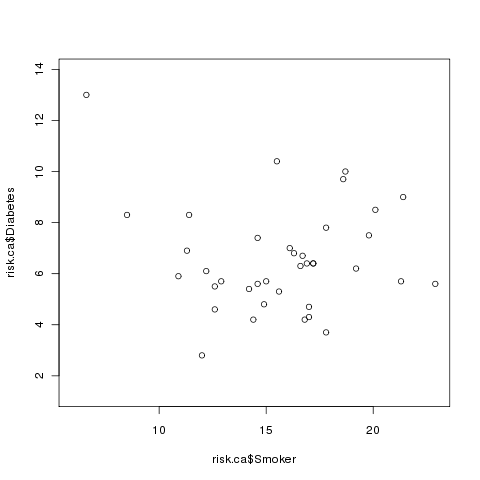
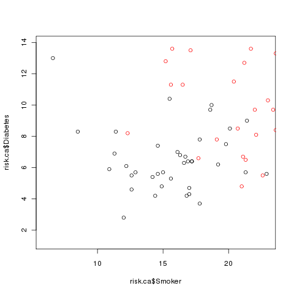
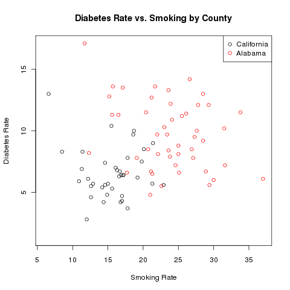
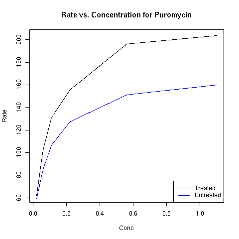
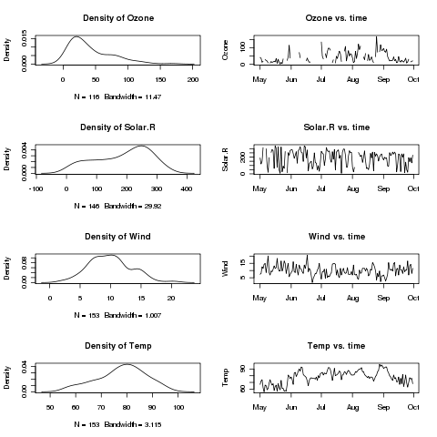

Plotting
1 More on Plotting
We've seen the usage of some basic graphics functions in previous
lectures, but there are still a few points that should be covered before
we study more advanced graphics commands. One issue has to do with
multiple lines on a plot. In addition to the high-level plot command,
R provides the points and lines functions, which can
add new data to a plot. Consider the nationwide Community Health Data,
available at the website http://communityhealth.hhs.gov. The data is available in a zip file, which contains a number
of CSV files containing information recorded for each county in the USA.
One such file, containing information about various risk factors and access to
health care in the counties can be found on the class website:http://www.stat.berkeley.edu/classes/s133/data/RISKFACTORSANDACCESSTOCARE.csv. First, we'll read in the data, and look at the first few records:
> risk = read.csv('http://www.stat.berkeley.edu/classes/s133/data/RISKFACTORSANDACCESSTOCARE.csv')
> head(risk)
State_FIPS_Code County_FIPS_Code CHSI_County_Name CHSI_State_Name
1 1 1 Autauga Alabama
2 1 3 Baldwin Alabama
3 1 5 Barbour Alabama
4 1 7 Bibb Alabama
5 1 9 Blount Alabama
6 1 11 Bullock Alabama
CHSI_State_Abbr Strata_ID_Number No_Exercise CI_Min_No_Exercise
1 AL 29 27.8 20.7
2 AL 16 27.2 23.2
3 AL 51 -1111.1 -1111.1
4 AL 42 -1111.1 -1111.1
5 AL 28 33.5 26.3
6 AL 75 -1111.1 -1111.1
CI_Max_No_Exercise Few_Fruit_Veg CI_Min_Fruit_Veg CI_Max_Fruit_Veg Obesity
1 34.9 78.6 69.4 87.8 24.5
2 31.2 76.2 71.2 81.3 23.6
3 -1111.1 -1111.1 -1111.1 -1111.1 25.6
4 -1111.1 86.6 77.8 95.4 -1111.1
5 40.6 74.6 66.1 83.0 24.2
6 -1111.1 -1111.1 -1111.1 -1111.1 -1111.1
CI_Min_Obesity CI_Max_Obesity High_Blood_Pres CI_Min_High_Blood_Pres
1 17.3 31.7 29.1 19.2
2 19.5 27.6 30.5 24.5
3 16.2 35.0 -1111.1 -1111.1
4 -1111.1 -1111.1 -1111.1 -1111.1
5 17.2 31.2 -1111.1 -1111.1
6 -1111.1 -1111.1 -1111.1 -1111.1
CI_Max_High_Blood_Pres Smoker CI_Min_Smoker CI_Max_Smoker Diabetes
1 39.0 26.6 19.1 34.0 14.2
2 36.6 24.6 20.3 28.8 7.2
3 -1111.1 17.7 10.2 25.1 6.6
4 -1111.1 -1111.1 -1111.1 -1111.1 13.1
5 -1111.1 23.6 16.7 30.4 8.4
6 -1111.1 -1111.1 -1111.1 -1111.1 -1111.1
CI_Min_Diabetes CI_Max_Diabetes Uninsured Elderly_Medicare Disabled_Medicare
1 9.1 19.3 5690 4762 1209
2 5.2 9.3 19798 22635 3839
3 2.0 11.3 5126 3288 1092
4 4.7 21.5 3315 2390 974
5 4.4 12.4 8131 5019 1300
6 -1111.1 -1111.1 2295 1433 504
Prim_Care_Phys_Rate Dentist_Rate Community_Health_Center_Ind HPSA_Ind
1 45.3 22.6 1 2
2 67.0 30.8 1 2
3 45.8 24.6 1 2
4 41.8 18.6 1 1
5 16.2 10.8 2 1
6 54.3 18.1 1 1
It's clear that the value -1111.1 is being used for
missing values, and we'll need to fix that before we work with the data:
> risk[risk == -1111.1] = NA
Suppose we want to investigate the relationship between Diabetes and
Smoking in each of the counties in California. We could create a data set
with only California using the subset command, and then plot the
two variables of interest:
> risk.ca = subset(risk, CHSI_State_Name == 'California')
> plot(risk.ca$Smoker,risk.ca$Diabetes)
Here's what the plot looks like:

Now let's say that we wanted to examine the relationship between smoking and
diabetes for some other state, say Alabama. We can extract the Alabama
data using subset, and then use the points command to add that
data to the existing plot. (Unlike plot, points doesn't
produce a new plot, it adds to the currently active plot.)
> risk.al = subset(risk, CHSI_State_Name == 'Alabama')
> points(risk.al$Smoker,risk.al$Diabetes,col='red')
The plot now looks like this:

Clearly there's a problem: some of the Alabama points are off the scale.
This demonstrates that when you wish to plot multiple sets of points on the
same graph that you have to make sure that the axes are big enough to accomodate
all of the data. One very easy way to do this is to call the plot
function with the minimums and maximums of all the data using type='n' as one of the arguments. This tells R to set up the axes, but not to
actually plot anything. So a better way to plot the two sets of points would
be as follows:
> plot(range(c(risk.ca$Smoker,risk.al$Smoker),na.rm=TRUE),
+ range(c(risk.ca$Diabetes,risk.al$Diabetes),na.rm=TRUE),
+ type='n',xlab='Smoking Rate',ylab='Diabetes Rate')
> points(risk.ca$Smoker,risk.ca$Diabetes)
> points(risk.al$Smoker,risk.al$Diabetes,col='red')
> legend('topright',c('California','Alabama'),col=c('black','red'),pch=1)
> title('Diabetes Rate vs. Smoking by County')
The completed plot looks like this:

To add a line to a plot, the lines function can be used in
place of the points function. The built-in data set
Puromycin provides data on concentration and reaction rate of
Puromycin on two types of cells, treated and untreated.
You can learn more
about R's builtin data sets by using the data() function,
and then using the usual help facility within R.
Since this is a small data set (only 23 rows), we can examine it
directly:
> Puromycin
conc rate state
1 0.02 76 treated
2 0.02 47 treated
3 0.06 97 treated
4 0.06 107 treated
5 0.11 123 treated
6 0.11 139 treated
7 0.22 159 treated
8 0.22 152 treated
9 0.56 191 treated
10 0.56 201 treated
11 1.10 207 treated
12 1.10 200 treated
13 0.02 67 untreated
14 0.02 51 untreated
15 0.06 84 untreated
16 0.06 86 untreated
17 0.11 98 untreated
18 0.11 115 untreated
19 0.22 131 untreated
20 0.22 124 untreated
21 0.56 144 untreated
22 0.56 158 untreated
23 1.10 160 untreated
Since there are two observations at each concentration, we
can use the aggregate function to calculate the mean before
plotting the data:
> Puro = aggregate(list(rate=Puromycin$rate),list(conc=Puromycin$conc,state=Puromycin$state),mean)
By putting the rate variable in a named list, I insure that
the column with the mean will be called "rate". Alternatively, I
could rename the column later:
> Puro = aggregate(Puromycin$rate,list(conc=Puromycin$conc,state=Puromycin$state),mean)
> names(Puro)[3] = 'rate'
Now we can create two data frames, one for the treated cells, and one for
the untreated ones:
> Puro.treated = subset(Puro,state=='treated')
> Puro.untreated = subset(Puro,state=='untreated')
Examination of the data shows that the rate for the treated
cells are higher than the untreated cells. Thus, instead of creating an
empty plot as in the previous example, I'll just plot the line for the
treated cells first:
> plot(Puro.treated$conc,Puro.treated$rate,xlab='Conc',ylab='Rate',main='Rate vs. Concentration for Puromycin',type='l')
> lines(Puro.untreated$conc,Puro.untreated$rate,col='blue')
> legend('bottomright',c('Treated','Untreated'),col=c('black','blue'),lty=1)
The plot appears below:

2 Multiple Plots on a Page
The mfrow or mfcol arguments to the par function
allow you to divide the plotting page into a grid, to accomodate multiple
plots on a single page. The layout of the plot is determined by a vector
of length 2, specifying the number of rows and columns in the grid. The
difference between mfrow and mfcol concerns the order in
which the plots are drawn. When using mfrow, plots are drawn
across the rows, while mfcol draws the plot down the columns.
As an example, consider the builtin airquality data set, which
contains various air quality measures for a five month period in New York.
We can get an idea of what the data is like by using the summary
function:
> summary(airquality)
Ozone Solar.R Wind Temp
Min. : 1.00 Min. : 7.0 Min. : 1.700 Min. :56.00
1st Qu.: 18.00 1st Qu.:115.8 1st Qu.: 7.400 1st Qu.:72.00
Median : 31.50 Median :205.0 Median : 9.700 Median :79.00
Mean : 42.13 Mean :185.9 Mean : 9.958 Mean :77.88
3rd Qu.: 63.25 3rd Qu.:258.8 3rd Qu.:11.500 3rd Qu.:85.00
Max. :168.00 Max. :334.0 Max. :20.700 Max. :97.00
NA's : 37.00 NA's : 7.0
Month Day
Min. :5.000 Min. : 1.00
1st Qu.:6.000 1st Qu.: 8.00
Median :7.000 Median :16.00
Mean :6.993 Mean :15.80
3rd Qu.:8.000 3rd Qu.:23.00
Max. :9.000 Max. :31.00
Suppose we want to plot histograms of each of the first
four variables, side by side with a plot of the variable over time.
The first step is to convert the Month and Date variables
into R Date variables:
> airquality$date = as.Date(ISOdate(1973,airquality$Month,airquality$Day))
Rather than typing in the plotting commans repeatedly, we
can write a function to make the plots for each variable:
twoplot = function(var){
plot(density(airquality[,var],na.rm=TRUE),main=paste('Density of',var))
plot(airquality$date,airquality[,var],type='l',main=paste(var,'vs. time'),ylab=var)
}
Since we'll be plotting the first four variables, we'll want
a 4x2 grid, and we'll want to plot by rows. Thus, we issue the following
command:
> par(mfrow=c(4,2))
We can use sapply to call our twoplot function for
each of the variables:
> sapply(names(airquality)[1:4],twoplot)
Ozone Solar.R Wind Temp
[1,] 1216 1216 1216 1216
[2,] 1247 1247 1247 1247
[3,] 1277 1277 1277 1277
[4,] 1308 1308 1308 1308
[5,] 1339 1339 1339 1339
[6,] 1369 1369 1369 1369
Here's the plot:

File translated from
TEX
by
TTH,
version 3.67.
On 28 Feb 2011, 10:52.